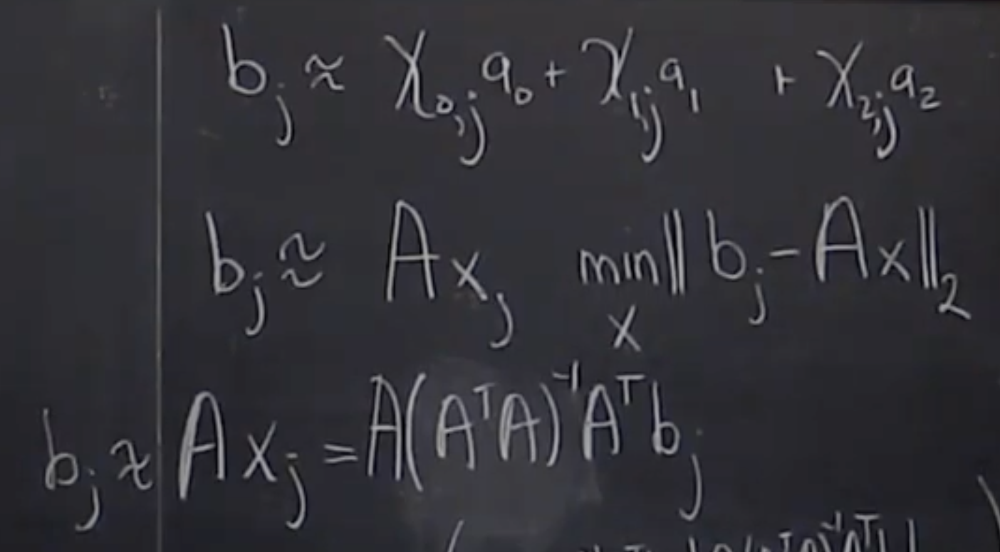
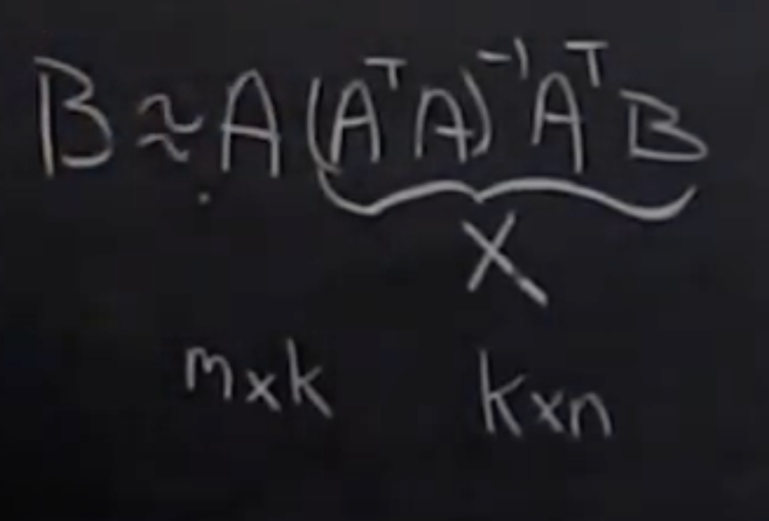

Linear Algebra - FAQs
Contents
Linear Algebra - FAQs#
Low rank approximation#
data compression in images can be done using matrix approximation
As image is an array of pixels, we can write it as a matrix
find \(B \approx AX\)

\(\tiny{\text{YouTube - Advanced LAFF - ulaff.net}}\)
column \(b_{j}\) can be represented as a linear combination of columns that we picked for A
column \(b_{j}\) is approximately sum of some constant \(\chi_{0}a_{0}\), \(\chi_{1}a_{1}\), …,
we want to pick the best set of \(\chi_{j}\) for this
minimize that over all possible choices of x, which is known as linear least squares problem

\(\tiny{\text{YouTube - Advanced LAFF - ulaff.net}}\)
if A has linearly independent columns, then the best such solution is given by \(x_{j} = A^{-1}b_{j}\)
but because A has more rows than columns, we can’t do that
instead we can use pseudo-inverse, which is \(x_{j} = (A^{T}A)^{-1}A^{T}b_{j}\)
this gives us \(b_{j} \approx Ax_{j} = A(A^{T}A)^{-1}A^{T}b_{j} \)

\(\tiny{\text{YouTube - Advanced LAFF - ulaff.net}}\)
SVD
say there are optimal columns in this picture which we can choose from
how to best determine the columns so that we get the best approximation of this image
SVD allows to find the optimal A and X for this approximation
it allows us to quantify how many columns are really needed as part of the matrix
Orthogonal vectors#
Orthogonal vectors have the property \(x^{T}y = 0\)
\(\tiny{\text{YouTube - Advanced LAFF - ulaff.net}}\)
\(\tiny{\text{YouTube - Advanced LAFF - ulaff.net}}\)
Components in the direction of vector#
\(\tiny{\text{YouTube - Advanced LAFF - ulaff.net}}\)
Orthonormal vectors and matrices#
A standard basis are orthonormal vectors
they are of unit length
they are mutually orthogonal
A set \({u_{0}, u_{1}, ..., u_{n-1}}\) in \(\mathbb C^{n}\), is said to be mutually orthonormal if

\(\tiny{\text{YouTube - Advanced LAFF - ulaff.net}}\)
Unitary matrices#
Let \(Q \in \mathbb R ^{mxn}\) be orthonormal matrix
n < m, because columns of orthonormal matrix are mutually orthogonal therefore they are linearly independent, and so we can atmost have n linearly independent vectors of size m
If n = m, they are called unitary matrices
\(Q^{-1} = Q^{T}\) and \(QQ^{T} = I\)
Unitary matrix - preserve length#
If we apply a unitary matrix to a vector, then it preserves length
If \(A \in \mathbb R^{mxm}\) and unitary, then \(\| Ax \|_{2} = \| x \|_{2}\) for all \(\mathbb R^{m}\)
Rotation preserve length - unitary matrix#
Rotation is a linear transformation, because
scaling a vector first and then rotating will give same results as rotating a vector first and then scaling
adding two vectors and then rotating will give same results as rotating first and then adding
so a matrix that represents rotation should be unitary matrix
\(\tiny{\text{YouTube - Advanced LAFF - ulaff.net}}\)
Reflection preserve length - unitary matrix#
Reflection is a linear transformation, because
scaling a vector first and then reflecting will give same results as reflecting a vector first and then scaling
adding two vectors and then reflecting will give same results as reflecting first and then adding
so a matrix that represents reflection should be unitary matrix

Real numbers vs Complex numbers - transpose representation#
In real number form, orthogonal vectors \(x,y \in \mathbb R^{n}\) is represented as \(x^{T}y\), where T - transpose
In complex number form, orthogonal vectors \(x,y \in \mathbb C^{n}\) is represented as \(x^{H}y\), where H - Hermitian
Change of basis using unitary matrices#
this is also known as change of orthonormal basis
Why is it important that a basis be orthonormal?#
When a basis is orthonormal, then a vector is merely the sum of its orthogonal projections onto the various members of the basis. That is not true of bases in general.
Often orthogonality represents a form of independence (as in statistics, where it says that there is a lack of covariance, or linear algebra where direct sums of vector spaces have a canonical inner product for which the sum is orthogonal). Orthogonal basis then means the ability to decompose an effect into separate, independent, non-interacting parts that simply add up to form the whole effect. This kind of decomposition is hugely important in situations where it can be done.
Consider a vector:
\(𝑣 = ğ‘ğ‘¥_{1}+ğ‘ğ‘¥_{2}\)
where \(ğ‘,ğ‘ \in \mathbb R\) and \(𝑥_{1},𝑥_{2}\) are basis vectors.
Let’s find the projection of 𑣠onto \(x_{1}\)
Non-orthogonal basis: Let \(x_{1},x_{2}\) be non-orthogonal basis.
\(<v,𝑥_{1}>\)
\(= <a𝑥_{1} ,𝑥_{1}> + <b𝑥_{2} ,𝑥_{1}>\)
\(= a<𝑥_{1} ,𝑥_{1}> + b<𝑥_{2} ,𝑥_{1}> \)
Since the basis is non-orthogonal \(<𝑥_{2},𝑥_{1}> \neq 0\). So, to compute the projection of 𝑣  on \(x_{1}\), we have to use two inner products \(<𝑥_{1},𝑥_{1}>\) and \(<𝑥_{2},𝑥_{1}>\) .
Orthogonal basis: Let \(x_{1},x_{2}\) be orthogonal basis.
\(<v,𝑥_{1}>\)
\(= <a𝑥_{1} ,𝑥_{1}> + <b𝑥_{2} ,𝑥_{1}>\)
\(= a<𝑥_{1} ,𝑥_{1}> \)
since \( <𝑥_{2} ,𝑥_{1}>=0\) by the definition of orthogonality. So, to compute the projection of v on \(𝑥_{1}\), we have to use only one inner product \(<𝑥_{1},𝑥_{1}>\). Therefore, orthogonal basis allows to compute projections easier than non-orthogonal basis.
Orthonormal basis: Let \(x_{1},x_{2}\) be orthogonal basis.
\(<v,𝑥_{1}> \)
\(= <a𝑥_{1} ,𝑥_{1}> + <b𝑥_{2} ,𝑥_{1}>\)
\(= a<𝑥_{1} ,𝑥_{1}>\)
\(= a \)
since \(<𝑥_{2} ,𝑥_{1}>=0\) by the definition of orthogonality and \(<𝑥_{1} ,𝑥_{1} \ge 1\) by the definition of normality. So, we can compute the projection of v on \(𝑥_{1}\) instantaneously without inner product: the projections are just coefficients of the corresponding basis components. Since an orthonormal basis doesn’t require any computation to find a projection, this is the best basis to use.
How unitary matrices preserves matrix sensitivity#
In conditioning while solving linear system, the relative error in most amplified by the condition number for A into relative error in solution
but this relative error is automatically taken care of if the matrices are unitary
\(\tiny{\text{YouTube - Advanced LAFF - ulaff.net}}\)
Singular Value Decomposition (SVD)#
Here the U and V are unitary matrices
the diagonal matrix of \(mxn\) size has all positive diagonal values and are known as singular values. All off-diagonal values are zero
they are always ordered largest to smallest
the rank of matrix is determined by SVD, which is the number of linearly independent columns that matrix A has
\(A \in \mathbb R ^{mxn}, U \in \mathbb R ^{mxm}, V \in \mathbb R ^{nxn}, \Sigma \in \mathbb R ^{mxn}, \)
\(A = U \Sigma V^{T}\)
\(\tiny{\text{YouTube - Advanced LAFF - ulaff.net}}\)
Properties of SVD#
\(A = U \Sigma V^{T}\) from SVD
Suppose
\(y = Ax\)
Using identity property
\(\Rightarrow UU^{T}y = AVV^{T}x\)
\(\Rightarrow U(U^{T}y) = AV(V^{T}x)\)
\(\hat{y} = (U^{T}y)\) is the vector of coefficients when we view vector y in the orthonormal basis of column of U
\(\hat{x} = (V^{T}x)\) is the vector of coefficients when we view vector x in the orthonormal basis of column of V
\(\Rightarrow U\hat{y} = AV\hat{x}\)
\(\Rightarrow \hat{y} = U^{T}AV\hat{x}\)
\(\Rightarrow \hat{y} = \Sigma\hat{x}\)
What does this tell us:
given matrix A, if we view input vector x and output vector y in the correct basis, i.e., use the columns of U as the basis in which we view y and we use the columns of V as the basis in which we view x,
then the matrix A can be approximated as diagonal matrix \(\Sigma\)
Geometric interpretation of SVD#
Reduced SVD#
\(A = U_{L}\Sigma_{TL}V_{L}^{H}\) (Reduced SVD)
where \(A \in \mathbb R ^{mxn}, U_{L} \in \mathbb R ^{mxr}, V_{L} \in \mathbb R ^{nxr}, \Sigma_{TL} \in \mathbb R ^{rxr}, \)
$\tiny{\text{YouTube - Advanced LAFF - ulaff.net}}$ $\tiny{\text{YouTube - Advanced LAFF - ulaff.net}}$\(A = U \Sigma V^{T}\) (SVD)
where \(A \in \mathbb R ^{mxn}, U \in \mathbb R ^{mxm}, V \in \mathbb R ^{nxn}, \Sigma \in \mathbb R ^{mxn}, \)
SVD of nonsingular matrices#
What is condition number of matrix#
A condition number for a matrix measures how sensitive the answer is to perturbations in the input data and to roundoff errors made during the solution process
There will be different condition numbers, when we are solving linear equations, inverting a matrix, finding its eigenvalues, or computing the exponential
A matrix can be poorly conditioned for inversion while the eigenvalue problem is well conditioned
It is given by
\(\kappa(A) = \|A\| \|A^{-1}\|\)
If a matrix is singular, then its condition number is infinite
\(\tiny{\text{Prof Michael G. Rozman - https://www.phys.uconn.edu/}}\)
What does rank of a matrix tell us?#
The rank of a matrix is the maximum number of its linearly independent column vectors (or row vectors). It also can be shown that the columns (rows) of a square matrix are linearly independent only if the matrix is nonsingular. In other words, the rank of any nonsingular matrix of order n is n.
The rank of a matrix is the dimension of the subspace spanned by its rows. The dimension of the column space is equal to the rank. This has important consequences; for instance, if A is an m × n matrix and m ≥ n, then rank (A) ≤ n, but if m < n, then rank (A) ≤ m. It follows that if a matrix is not square, either its columns or its rows must be linearly dependent.
For any m × n matrix, rank (A) + nullity (A) = n. Thus, if A is n × n, then for A to be nonsingular, nullity (A) must be zero.
What is a permutation matrix?#
A permutation matrix is the result of repeatedly interchanging the rows and columns of an identity matrix.
Each row of a permutation matrix has one entry equal to and all the other entries equal to 0
Each column of a permutation matrix has one entry equal to and all the other entries equal to 0
Let P be a permutation matrix. Then, its rows are the standard basis of the space of 1 x K vectors, and its columns are the standard basis of the space of vectors K x 1
A permutation matrix is full rank
A permutation matrix is an orthogonal matrix, that is, its transpose is equal to its inverse \(P^{-1} = P^{T}\)
Best rank k-approximation#
\(\tiny{\text{YouTube - Advanced LAFF - ulaff.net}}\)
\(\tiny{\text{YouTube - Advanced LAFF - ulaff.net}}\)
References#
Advanced Linear Algebra: Foundations to Frontiers by Robert van de Geijn, Margaret Myers. Source: url: http://ulaff.net notes and YouTube embedded video